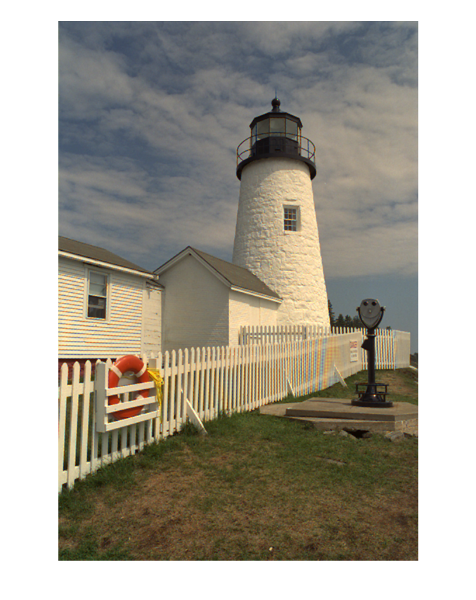
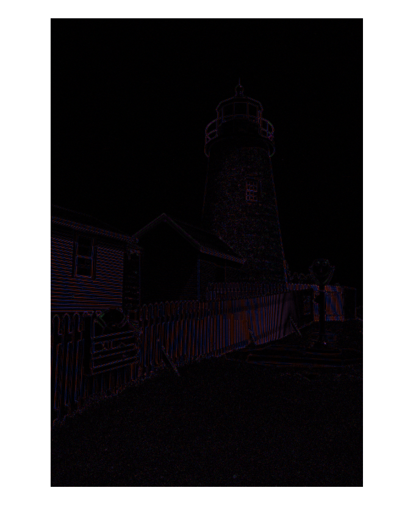

Contents
clear; I=imread('kodak_fence.tif','tif'); I=double(I); figure,imshow(I/255); [N,M,ch]=size(I); A=zeros(N,M); A(1:2:N,1:2:M)=I(1:2:N,1:2:M,2); % G A(2:2:N,2:2:M)=I(2:2:N,2:2:M,2); % G A(1:2:N,2:2:M)=I(1:2:N,2:2:M,1); % R A(2:2:N,1:2:M)=I(2:2:N,1:2:M,3); % B

Bilinear interpolation
tic; I2=bilinear_cdm(A); toc;
Elapsed time is 0.107188 seconds.
Show results
figure,imshow(I2/255); % The interpolated image figure,imshow(abs(I-I2)/255); % Diff between original image and interpolation 